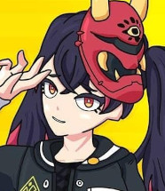

LÂMINA ASSASSINA

- Codinome: Lâmina Assassina
- Nome: Hitagi
- Idade: 16
- Armas: Katana
HISTÓRIA
História: Hitagi é uma adolescente que cresceu em uma família de assassinos de aluguel, por isso foi treinada
desde cedo para continuar com o trabalho da família e sempre demonstrou grande aptidão para a tarefa. Quando
completou 15 anos seu pai chefe da família concluiu que não tinha mais nada a ensiná-la, desde então ela vem
completando um excelente trabalho ganhando o apelido de Lâmina Assassina.
HABILIDADES
- Hitagi saca sua katana e desfere diversos golpes seguidos deixando seus inimigos sem tempo de reação.
- Hitagi se concentra por x segundos e depois disso avança em alta velocidade em direção ao seu alvo aplicando somente um corte fatal.
PASSIVA
- Enquanto com sua katana guardada Hitagi ganha um grande aumento de velocidade e não emite som com seus passos.
Voltar